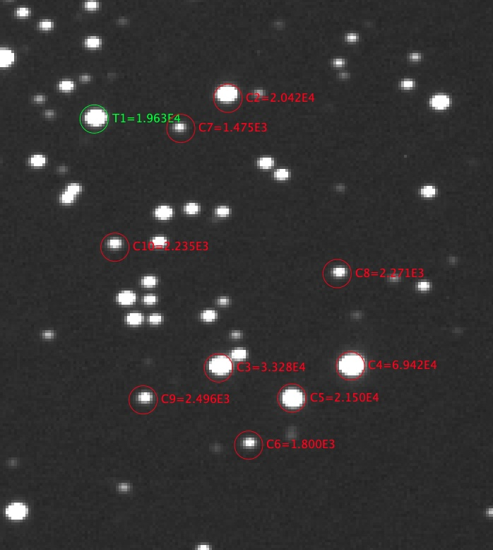
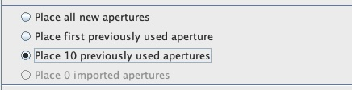
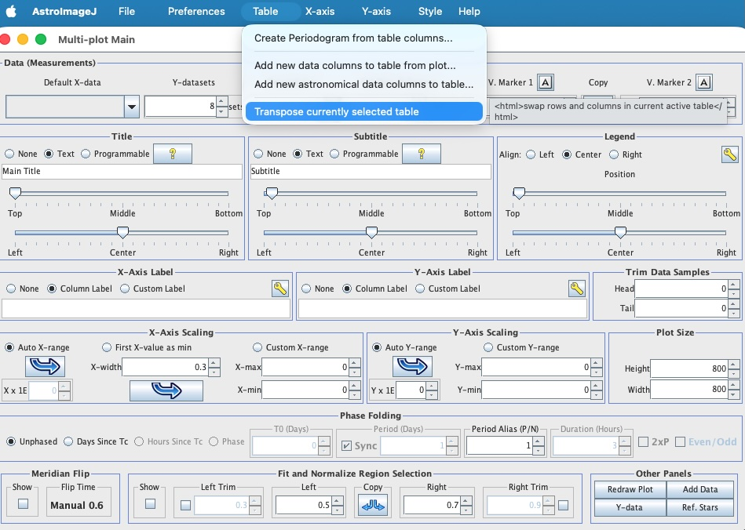
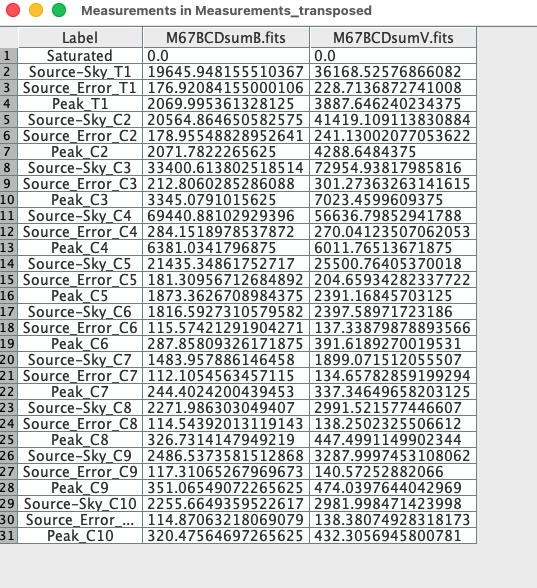
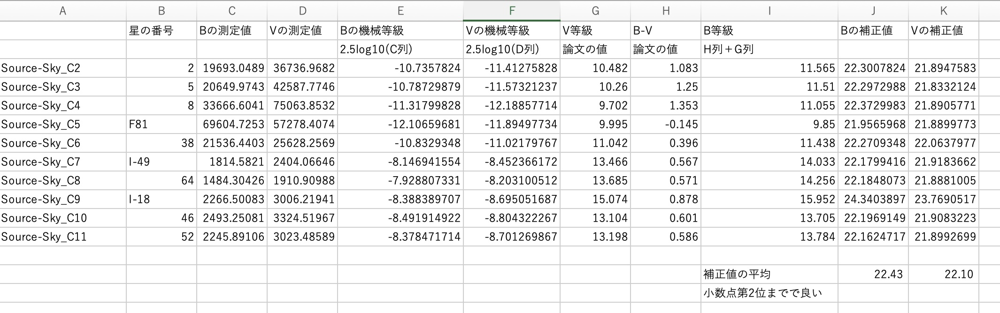
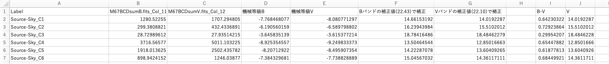
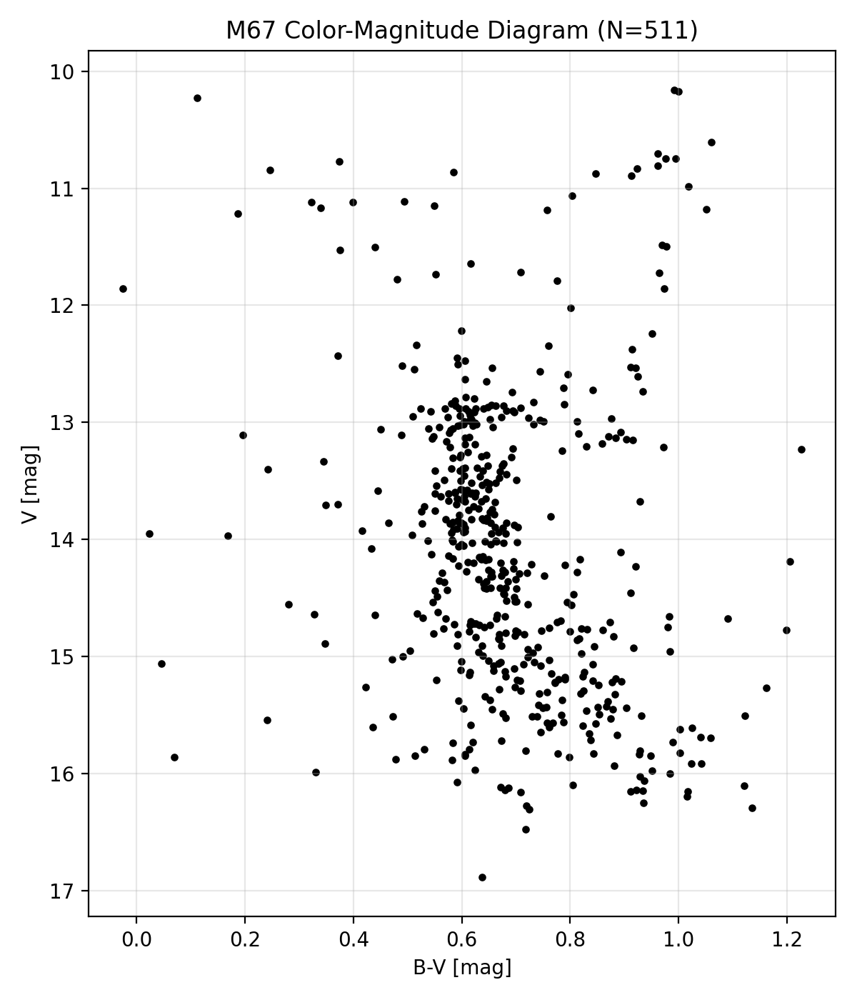

[ 松江工業高等専門学校 | 情報工学科 | 情報工学実験トップに戻る ]
AstroImageJを使ってBバンドとVバンドをまとめて測光する．(測光＝天体の明るさを測定すること)。下の解説だけではよくわからない人は、一つ上の階層にある解説動画も参照すること。ソフトのバージョン違いで細かい点で異なる所もあるがやるべきことは同じ
フィルターごとに重ね合わせた画像を１つのフォルダーに入れる
ファイルの読み込み
File -> Import -> Image Sequence...
ディレクトリを選択
フィルターごとに重ね合わせた画像を入れたフォルダーを指定する
「OK」をクリック
方針：「ゼロ点補正(補正値の算出)のための測光」と「HR図を作るための測光」を分けておこなう。
ゼロ点補正のための測光：論文にある明るさのわかっている１０個ぐらいの星を測光して、機械等級と本当の等級の差(補正値)を算出する
HR図を作るための測光：論文にない星も含めて画像中の星を測光する。機械等級から本当の等級への変換は一律に補正値を使えば良い。
以下にある「測光の手順」に従って，Anupama et al. 1994 にある星を10星ほど選んで測光する
画面を上下反転させると論文と同じ配置になる。ViewタブからInvert-Yを選ぶと上下反転する
どの星をどの順番で測光したのかメモしておくこと(ゼロ点補正のための測光)。特に一つ目の位置は重要(ゼロ点補正＆HR図の両方で重要)。
測光したら，ゼロ点補正手順について に従って，補正値C0aveを求める
以下にある「測光の手順」に従って，できるだけ多くの星を測光する
ざっくりした目安は400星以上,できれば500星くらい測光する
どの星をどの順番で測光したのか，メモする必要はありません
ゼロ点補正のために測光した星も測光する
暗い星もできるだけ測光する
測光する星の数が多いほど,よりよいHR図を描くことができます
右端から測光する
測光すると星の右側に文字が書き込まれる．左から測光すると測光前の星の上に文字が書かれて邪魔になる
Aperture(アパーチャー：開口半径)の設定
明るく周囲に星がない孤立した星を選ぶ
Windows：Altキーを押しながら選んだ星をクリック
Mac：optionキーを押しながら選んだ星をクリック
Seeing Profile の窓が開く
赤字で表示される Radius，Back>，<Back の３つの数字をメモする
「Save Aperture」をクリックする
複数の星を同時に測光する(ゼロ点補正測光、HR図測光の共通手順。Analyzeは星の画像が写っている方の画面のタブ）
Analyze -> Multi-aperture...
Multi-Aperture Measurements の窓で測光のパラメターを設定する
「Fixed/Base radius of photometric aperture」「Fixed/Base radius of inner background annulus」「Fixed/Base radius of outer background annulus」の3つの数字が,先ほどメモした３つの数字に一致することを確認する。
ただし、Inner radiusとouter radiusは少し小さめの値に変更しても良い。これは近接する星の影響を軽減するためである。
Fixed Apertures as selected above にチェックを入れる
Auto comparison stars のチェックを外す
Remove stars from background にチェックを入れる
「Aperture Settings」のボタンをクリックする
Saturation warinigとLinearity warningのチェックを外す。外さなかったらSourc-Sky以外のデータも出力される。
「More Settings」のボタンをクリックする
Select single aperture items to display in measurements table: の中から，以下の２つにだけチェックを入れる(それ以外のチェックを外す)
Filename (Label)
Source Counts (Source-Sky)
Select aperture items to display (or clear) in image overlay: の中にある以下のチェックを外す
終わったら「OK」をクリック
設定が終わったら，「Place Apertures」のボタンをクリックする
測光する星を設定する
測光する星をクリックする
測光する星を全てクリックしたら，「Enter」キーを押す
途中でクリック操作を間違った時 => 星を選んでいる途中ならEscキーを押す。最初からやり直しとなる。
Enterキーを押した後 => Multi-apertureタブをクリックしてやり直し。この時、Multi-aperture MeasurementsのダイアログでPlace N(個数) previous used apertureというチェックボックスを選択。一つ目の星を正しくクリック=>一つ目の星の位置関係から測光済みの星を推定するので、測定に失敗した続きの星から測光できる。

図１. 論文の星、ゼロ点補正で10個を選択した場合の例

図2. 途中からやり直す時のMulti-Aperture Measurementsのダイアログの例
「Enter」キーを押すと測光が始まり，窓がいくつか開く
測光が終わったら
Multi-plot Main の窓で Table -> Transpose currently selected table とすると，測定結果の行と列が入れ替わる(入れ替えたほうがこの後の処理が楽になる)

図3. 行列の入れ替え(ゼロ点補正の例)
Measurements in Measurments_tranposedに結果がでるので、File=>Save asから.txt拡張子をつけて保存

図4. この図は、Saturation warinigとLinearity warningのチェックを外し忘れた時の結果、Sourc_ErrorやPeakの値はいらないのでチェックを外し忘れたならテキストファイル上であとから削除。テキストファイルの編集はVSCodeなど自分の慣れた環境で行えば良い。
ファイルの中身に色々な情報が書いているが欲しいのは、それぞれの星のBバンド及びVバンドのSouce-Skyの値。一列目に星のid、2列目にBバンドのSouce-skyの値、3列目にVバンドのSouce-skyの値がくるように整形する。
整形の方法は自由(Excelでも良い)。J科の皆さんならプログラムを書いてあっさりできるのではないかと期待。
2列目のデータと3列目のデータと及び補正値Cave(BとVでそれぞれ異なる値)を用いて、天文学的な等級、B等級、V等級を求める。

図5. Excelでの処理例。I列したから2行目の「補正値の平均」の横の数値が求めたかった、Bバンド、Vバンドそれぞれでのゼロ点(補正値)。E列、F列2行目の説明2.5log10(C列)はマイナス抜けている。実際の計算ではマイナスをつけて計算
ゼロ点補正の測光はここまで。HR図作成のための測光へ。このページだと、「複数の星を同時に測光する」に戻る。

図6. 全ての星を測光した結果の例
HR図のための測光が終わったら、横軸にB-V等級、縦軸にV等級としてHR図を描く。縦軸は数字が小さい方が上になるように。これは数字が小さいほど明るいという天文学の慣習のため。
I列のB-Vを横軸、J列のVを縦軸としてHR図（Color-Magnitude Diagramともいう）をpythonで作図した結果例。

図7. HR図（Color-Magnitude Diagram）の作図例。pandasとmatplotlibを利用。B-V<0、B-V>1.25、V>9の外れ値は表示から除いた。
ここまでできたら、理論値と比較して読み解くに進む
使い慣れた環境があればそれを使えば良い。以下は，自分のパソコンにuvでPython環境を作る例
Windowsの場合：uvのインストール
Macの場合：uvのインストール
Python環境を作る(Windows・Mac共通)
測光パラメータ(アパーチャー半径など)の再設定＆星の選別を見直す
明るすぎる星が近くに写っている星は測定しない。明るい星の影響を受けるかもしれないので。
暗い星まで粘り強く測定する。暗い星の測定値が多いほど、HR図の精度が上がる。
Last Updated: 2026/10/18, Since: 2017/10/15.Makefile.rd2html .